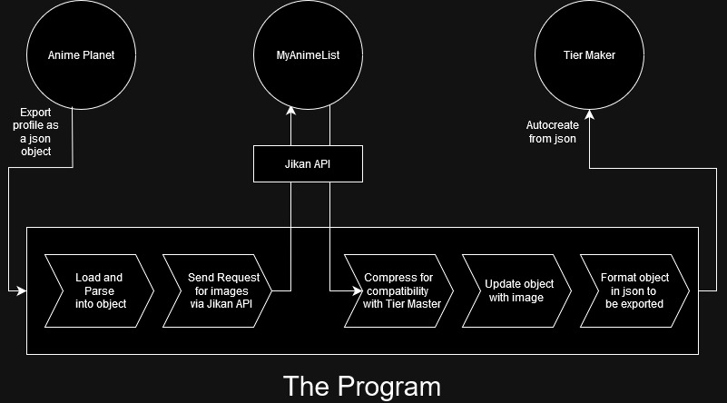
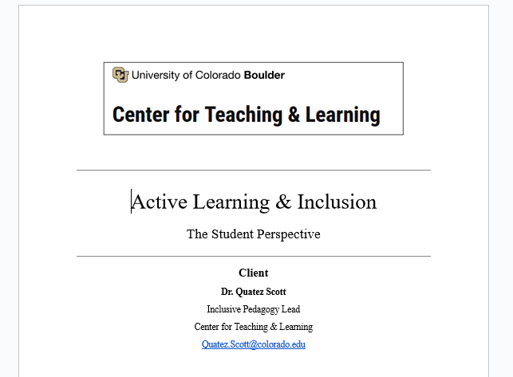
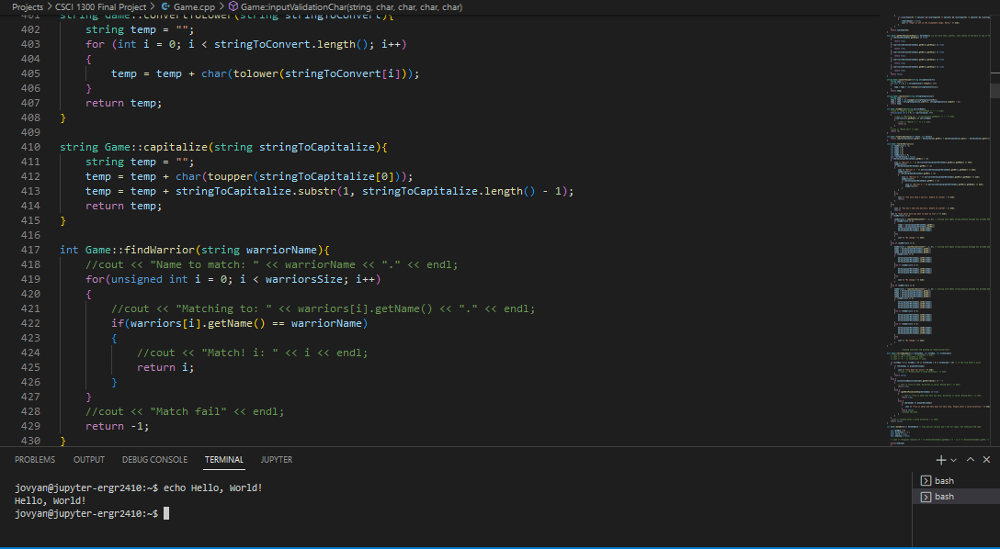

AP-to-Tierlist
A program written in Python which parses a user’s favorite tv/movies list (.json) and uses a web API to download images for each of them, automatically setting up an offline tier list for the user to mess with and enjoy. Invaluable for developing confidence in my programming abilities, as I had to do everything on my own, from ideation and feasibility research to execution - something I didn’t get from school projects.
Go to Repository

Consulting Report
A team report on current active learning practices and room for improvement at the University of Colorado, Boulder focusing on STEM written for the departments of Active Learning and Inclusive Pedagogy. It was a good opportunity to learn how to work with a team on not a program but a document and on research - something relatively lacking in CS curriculum.
Go to Google Drive

Command-line Game of Thrones
A 1500 line turn-based, singleplayer terminal game written in C++ based loosely on Game of Thrones lore which required a lot of time and, while not any high-level concepts, was a solid introduction to classes and project planning.
Go to Repository[fix link]